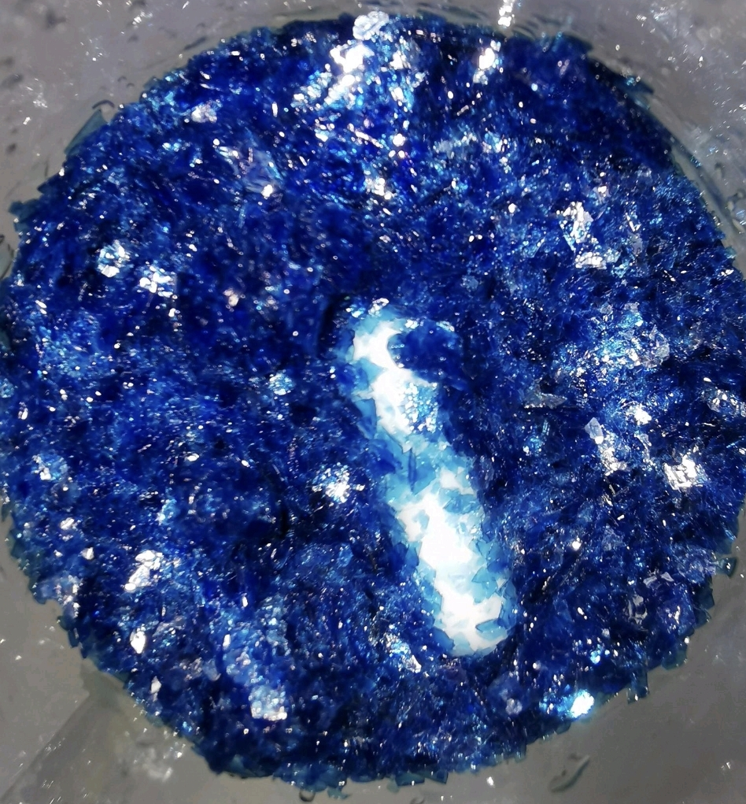

氯化三(2,2'-联吡啶)合铜篇

图源：N-乙酰基蘑菇
🎯 预览
- 难度等级：★★☆☆☆ (入门进阶)
- 实验耗时：约1小时（不含结晶）
- 单晶培养：数天
- 推荐人群：想理解配体比例如何决定配位结构的爱好者
- 二水合氯化铜 CuCl2·2H2O
- 2,2'-联吡啶（2,2'-bipyridine）纯品
- 无水乙醇 EtOH
- 蒸馏水
- 磁力搅拌器、恒温水浴与抽滤器材
一、背景化学知识
1.1 化合物简介
在硝酸双(2,2'-联吡啶)合铜篇中，我们用 1:2 的金属-配体比制得了五配位的 [Cu(bipy)2Cl]Cl 型络合物。而当我们把联吡啶的投料提高到 1:3，第三个联吡啶分子便会强行挤入内界，将铜离子完全包裹，得到全配位的六配位络合物——氯化三(2,2'-联吡啶)合铜。同样的两种原料，仅仅改变配比，就得到两种结构迥异的晶体，这正是配位化学最迷人的地方之一。本配方流程极为简洁：溶解、混合、浓缩、冷却，四步即可完成。
1.2 目标化合物属性
Tris(2,2'-bipyridine)copper(II) chloride heptahydrate
1.3 结构特点
二、实验制备
2.1 原料准备（1:3 摩尔比）
2,2'-联吡啶 — 5 g（约 0.032 mol，略过量）
无水乙醇 — 约 30 mL
蒸馏水 — 约 20 mL
安全提醒
- 联吡啶毒性： 联吡啶粉末有一定毒性及刺激性，称量时避免吸入粉尘。
- 铜盐防备： 铜离子属于重金属，请佩戴手套操作。
- 防火： 使用乙醇作溶剂时，远离明火。
2.2 制备操作流程
CuCl2·2H2O + 3bipy + 5H2O ──→ [Cu(bipy)3]Cl2·7H2O
（投料比 1:3，联吡啶略过量以保证全配位）
本实验与双联吡啶体系唯一的差别就是配体用量：金属与配体 1:3 时，第三个联吡啶分子完成全配位，得到六配位八面体 [Cu(bipy)3]2+；若配体不足（1:2），则只能得到五配位的 [Cu(bipy)2Cl]+，且产物外观与晶形均不同。投料比直接决定产物结构，称量务必准确。
三、安全与注意事项
防护与废液处理
- 个人防护： 全程佩戴丁腈手套。2,2'-联吡啶纯品常因轻微氧化发黄，且有特异气味，请在通风良好处称量。
- 浓缩控温： 乙醇-水体系务必使用水浴加热并控制在 65℃ 左右，严禁直火加热，注意防止暴沸；乙醇蒸气易燃，远离一切火源。
- 废液处理： 含有铜络离子的母液与洗涤废液不可直排。应收集后加入碳酸钠等使铜离子沉淀，集中进行重金属废液处理。
四、成果展示与质量评估
晶体特征对比
- 颜色呈均匀的蓝紫色，与五配位体系的蔚蓝色明显不同
- 结晶完整、晶面清晰有光泽
- 溶于水后呈深蓝色，且颜色稳定
- 颜色偏蔚蓝色而非蓝紫色——配体投料不足，可能混入五配位产物
- 析出大量浑浊粉末——浓缩过度或冷却太快
- 溶液久置后颜色变浅发绿——配体量不足或体系被酸化
五、常见问题与解答（Q&A）
Q1：这篇和硝酸双(2,2'-联吡啶)合铜篇是什么关系？
同源不同构。两篇用的是同一对原料（铜盐 + 联吡啶），区别只在投料比：1:2 得到五配位的 [Cu(bipy)2X]X 型蔚蓝色晶体，1:3 得到六配位的 [Cu(bipy)3]X2 型蓝紫色晶体。两者是讲解"配比决定结构"的完美对照实验。
Q2：为什么联吡啶要用乙醇溶解？
2,2'-联吡啶在水中的溶解度很小，直接加入水溶液会析出白色固体，导致配位不充分、产物不纯。必须先用无水乙醇将其溶解，再与铜盐水溶液混合，才能保证三个配体均匀、充分地参与配位。
Q3：为什么浓缩温度定在 65℃ 左右？
乙醇沸点约 78℃，65℃ 的水浴既能平稳地蒸发掉部分乙醇与水、推动溶液进入过饱和区，又能避免暴沸飞溅和长时间高温对配合物的潜在破坏。浓缩终点控制在约 20 mL：太稀则析晶缓慢且量少，太浓则容易一下子析出细粉。
Q4：能把二水合氯化铜换成硫酸铜或硝酸铜吗？
可以类比操作，阳离子 [Cu(bipy)3]2+ 的形成不受影响，但得到的是相应阴离子的盐（如硫酸盐、硝酸盐），其溶解度、水合数与结晶习性都与氯化物不同，浓缩终点需要自行摸索调整。

2]2[Fe(CN)6].jpg)